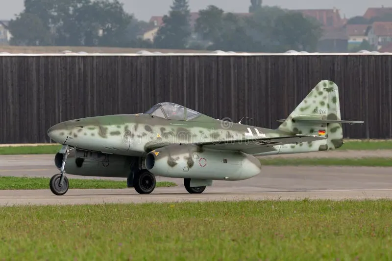
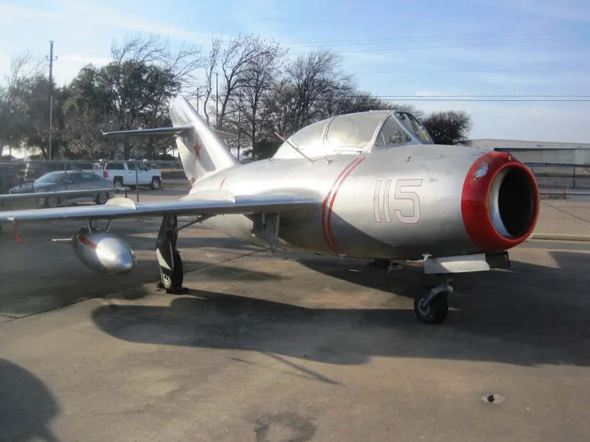
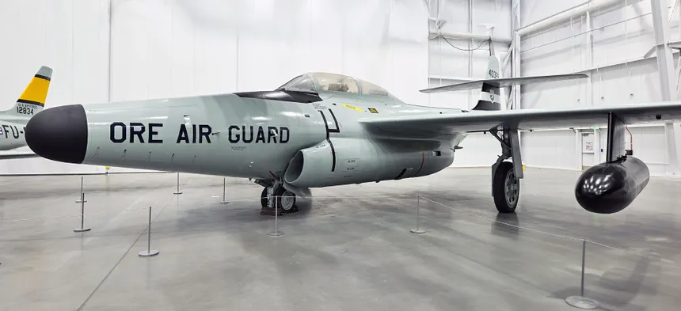
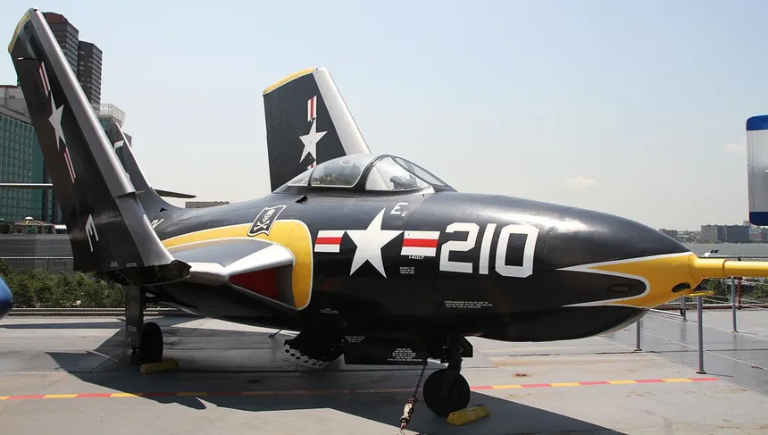

O primeiro modelo de caça motorajato foi feito pela Alemanha Nazista que foi introduzido em abril de 1944, Na qual era um caça Bimoto, seu nome era Messerschmitt Me 262 Sua velocidade maxima era de mach 0,87
aqui está uma imagem modernizada de Messerschmitt

O proximo jato a ser mencionado q já foi um grande salto no mundo da aeronáutica é o caça MiG-15 que surgiu em 1949 que se popularizou na guerra da coreia, ele inclui : asa enflechada, motor turboajato e possuia armamento pesado como canhões
O MiG-15 teve seu surgimento na União Sovietica e o seu nome completo é : Mikoyan-Gurevich MiG-15

um pequeno pulo em tecnologia, northrop foi o 1° jato a ter misseís a radar, ou seja, seus misseis erão guiados a base de radares que iam direto o caça inimigo.

Já o Grumman F9F-8 Cougar foi o primeiro caça guiado a calor infravermelho, ou seja, O calor que os jatos inimigos emitiam guiava seus misseis diretos para eles.
